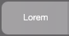
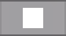
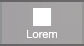
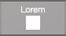
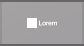
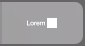

定义按钮时，可以添加文本标签、图标或文本和图标，然后指定要执行的单个命令或脚本。
您可以创建的另一种类型的按钮是弹出框按钮，用以显示弹出框。请参阅使用布局上的弹出框。
1. 如果定义的是执行脚本的按钮（与单个 FileMaker Pro Advanced 命令相对应），请创建该脚本。
请参阅创建并编辑脚本。
2. 在布局模式下，从"布局"弹出菜单中选择按钮的布局。然后：
•要定义新按钮，请继续步骤 3。
•要更改按钮定义，请双击按钮，然后跳到步骤 4。
3. 创建新按钮或选择将用作布局上按钮的对象。
目的 | 请执行此操作 |
创建新按钮 | 在状态工具栏中，执行以下操作。 •Windows：单击"按钮工具" 或"弹出框按钮工具" 旁边的箭头，选择菜单中的"按钮"，然后拖动十字线来绘制按钮。 •macOS：单击并按住"按钮工具 "或"弹出框按钮工具 "，选择菜单中的"按钮"，然后拖动十字线来绘制按钮。 |
将按钮定义添加到一个或多个现有对象，如文本或字段 | 选择对象，然后选择"格式"菜单 >"按钮设置"。 如果选择多个对象，请仅选择没有以前按钮定义的对象。将对象定义为按钮时，FileMaker Pro Advanced 会将它们分组。请参阅编辑对象、布局部分和布局背景。 |
如果将按钮定义附加到现有对象，则只能使用按钮的操作，因此跳到步骤 5。
4. 在"按钮设置"对话框中，选择按钮的标签类型。
默认情况下，FileMaker Pro Advanced 创建居中对齐的仅文本标签。
要创建以下类型的标签 | 请执行此操作 |
仅文本 | 单击 ，然后在文本框中键入标签。 |
仅图标 | 单击 ，然后单击出现的选择中的图标。滚动或按向上键或向下键查看更多选择。 要更改图标大小，请拖动滑块（图标的大小在布局上变化）或输入大小（以磅为单位）。 要使用自定义图标，请单击"+"。选择文件名（PNG 或 SVG 格式），然后单击"打开"(Windows) 或"插入"(macOS)。有关 SVG 支持的更多信息，请参阅《FileMaker Pro 按钮图标 SVG 语法》。 要从此文件的选择列表中删除自定义图标，请选择图标，然后单击 —。该图标即从列表中删除，但使用已删除图标的按钮或弹出框按钮不会变化。 |
文本和图标 | 单击 、、 或 。在文本框中键入标签，然后单击出现的选择中的图标。使用上面的信息完成标签。 |
5. 对于"操作"，请选择您希望按钮执行的操作。
要执行的操作 | 选择 |
无操作 | 不执行任何操作（默认值）。还可以选择此选项以禁用按钮。 |
一个命令（如转到特定布局） | 单步。在"按钮操作"对话框中，选择并定义一个脚本步骤，然后单击"确定"。 要将操作另存为脚本，请单击"转换为脚本"。输入脚本的名称，然后单击"保存"(Windows) 或"确定"(macOS)。FileMaker Pro Advanced 会将脚本保存在"脚本工作区"中。请参阅创建并编辑脚本。 注释 选中"以完全访问权限运行脚本"以允许脚本执行通常可能不被分配给用户的权限所允许的操作。 |
已定义脚本 | 执行脚本。在"指定脚本"对话框中选择脚本，指定可选脚本参数，然后单击"确定"。（只能为每个按钮选择一个脚本。）要定义脚本，请参阅创建并编辑脚本。 要指定不同脚本，请单击 。 提示 在"指定脚本"对话框中，还可以在"脚本工作区"中按住 Alt 键并双击 (Windows) 或按住 Option 键并双击 (macOS) 打开脚本。 |
6. 要让浏览模式和查找模式下按钮上的光标更改外观，请选中"选项"下的"光标在按钮之上时变为手形"。
•按钮在布局模式中由"标记" 标识。如果没有看到标记，请选择"查看"菜单 >"显示">"按钮"。如果按钮具有与其相关的其他 FileMaker Pro Advanced 标记，则该按钮标记可能由于其他标记而不显示。请参阅识别布局对象上的标记（图标）。
•"执行脚本"对运行子脚本很有用。您可以选择当用户单击按钮时暂停、恢复、退出还是中断当前正在运行的脚本。
•暂停（默认）：暂停的脚本仍然暂停。
•恢复：在运行按钮的脚本后，暂停的脚本将会得以恢复。
•退出：退出当前已暂停脚本。如果当前脚本曾被另一个脚本调用，控制就会返回原始脚本。
•中断：所有脚本的执行都会中断（按钮的脚本除外）。
•即使增加图标的大小，SVG 格式的按钮图标（FileMaker Pro Advanced 提供的图标或您提供的自定义图标）仍保持锐利。但是，如果指定 PNG 格式的自定义图标，图标的大小应是 256 x 256 像素，以在高分辨率显示屏（如 iPhone 的 Retina 显示屏）上获得最佳效果。